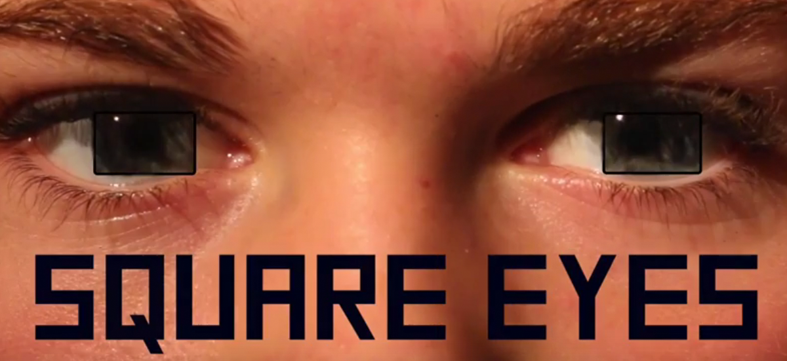
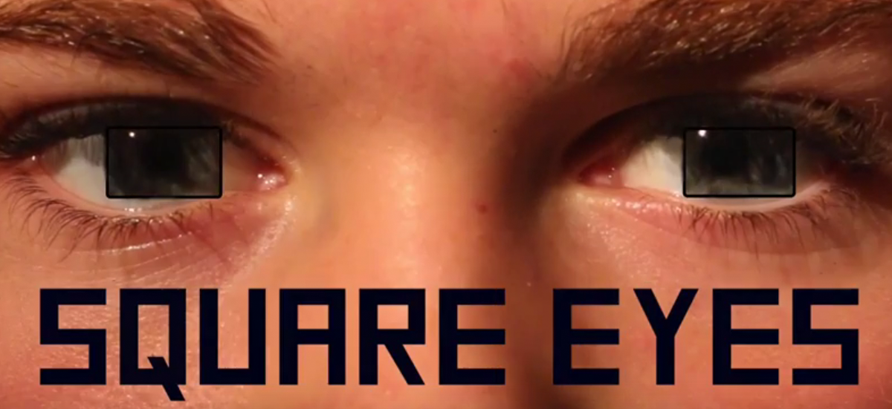

Square Eyes
A documentary that covers the idea of screen addiction. Is it real? And how does technology affect the development of children?
A documentary that covers the idea of screen addiction. Is it real? And how does technology affect the development of children?
This was a documentary I created with a group for a film class I was took in second year. We were asked to cover a topic that was not well known to the public, so we decided to talk about screen addiction. Through interviewing Proffesors, Designers and students we were able to create an informative documentary . Enjoy!
Creating this documentary was a great experience. I have a huge passion for film and being able to work the equipment and see the documentary come to life was remarkable. Since watching documentarys is one of my favourite past times I really love saying that I helped create one. As I grow up I realize that you have to love what you do, your job is where you spend most of your time, so you might as well enjoy what your doing while your doing it.
One of my roles on this project was filming the interviews and time lapses. Throughout my time as a student and working I have gained experience working with videography and audio equipment. There is nothing better than getting the perfect show or having the crispest audio in a film. I have come to appreciate this in other films and documentarys that I watch. Having an eye for detail is so important!

Currently, I am helping to redesign the website for the Child Parent Resource Institute. This organization helps children all across Ontario with complex mental health problems.

Amet nullam fringilla nibh nulla convallis tique ante proin sociis accumsan lobortis. Auctor etiam porttitor phasellus tempus cubilia ultrices tempor sagittis. Nisl fermentum consequat integer interdum.

Amet nullam fringilla nibh nulla convallis tique ante proin sociis accumsan lobortis. Auctor etiam porttitor phasellus tempus cubilia ultrices tempor sagittis. Nisl fermentum consequat integer interdum.